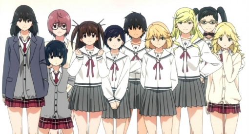
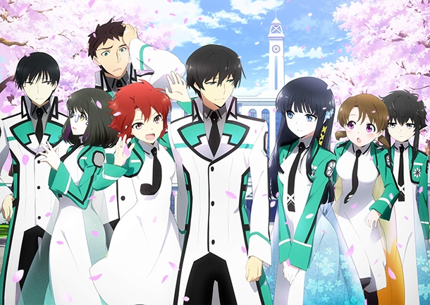
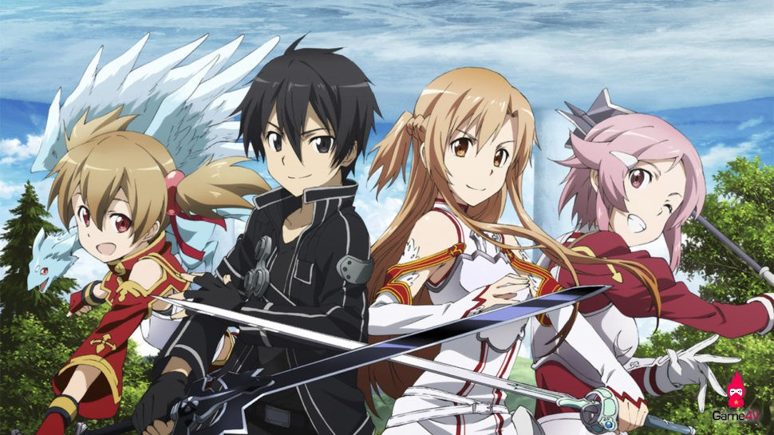
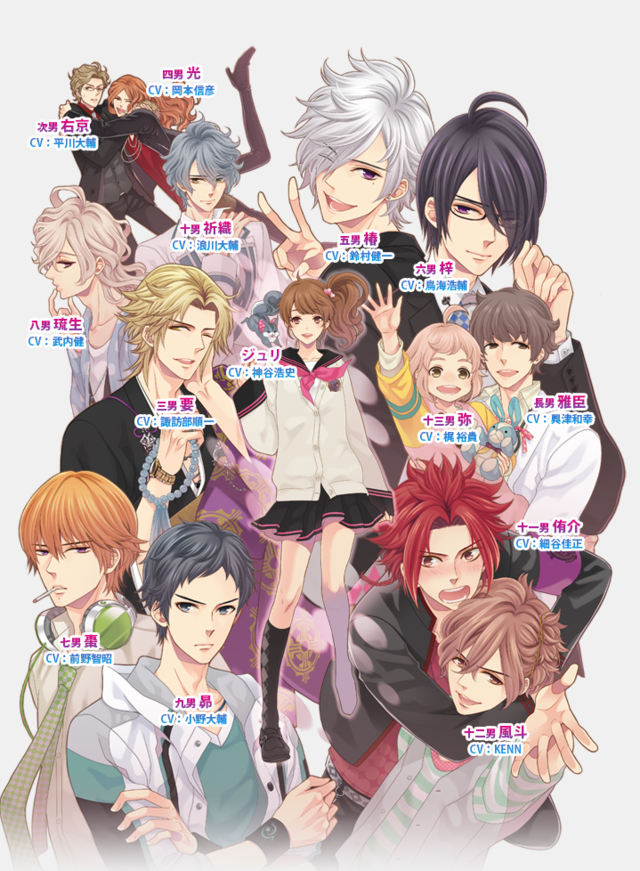
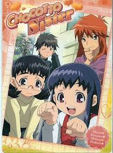

-
1) Hasutkoi Limited

Even from the beginning, the story’s drama gets to the peak when “the beast” confesses a love toward “beauty”. Then, a series of different breathtaking events brings a lot of surprise, which includes brocon, siscon, the ugly, the pretty, and so on. A tsundere does not dare to confess her feeling toward a pervert. A little girl always feels embarrassed at swimming because of her D-cup boobs but is attached to a loquacious senpai always talking about swimming. And many others.
A mutual affection hindered by conditional differences or a romantic love story suddenly concluded has raised difficult-to-describe feelings.
Gradually, the plot becomes more and more transparent, and it gets easier to get through the story’s content. The confusing message behind the anime – “love” – is finally exposed in an ingenious way. -
2) Mahouka Koukou no Rettousei

This anime is only for over-17 adults. It tells us a story of a magical world that was formed nearly a hundred years ago. In a spring, the Magic High School welcomes its news students, and excellent students with high scores are called the Bloom, while the students scored in the bottom half are called the Weed.
Two brothers Tatsuya and Miyuki Shiba are ranked Weed and Bloom, respectively. While Miyuki’s performance is impressive, her brother Tatsuya scored pretty low with his magic exam.
Tatsuya is a visionary, and Miyuka has a special feeling towards her brother. After those two students get into the school, its original peaceful environment no longer exists. -
3) Sword Art Online

Sword Art Online is a “hardcore” and 18+ brocon anime. Before the Sword Art Online catastrophe, Suguha accidentally knows that Kirito is not her sibling, considering it as the reason why Kirito stays away from her.
She explores a new game that is similar to SAO, Alfheim Online, and there she unwittingly falls in love with her brother, but she still holds no important place in Kirito’s heart. Accordingly, she also becomes another victim of the game -
4) Brothers Conflict

Our main character Hinata Emma’s father is a famous explorer named Hinata Rintarou, who get re-married with a successful businesswoman, Asahina Miwa.
Emma lives together with Miwa’s sons. That’s when she realizes she has totally 13 brothers! The eldest is 31 years old, while the youngest is 10 years old. Gradually, the brothers start to fall in love with Emma… -
5) Cyclops Shoujo Saipu

This brocon anime is about the story of Fuuka, a girl with an early-grown body, and her boobs look like two watermelons even though she’s just a secondary high school student.
Because of her special hairstyle that covers her right eye, she is called Saipu – referring to cyclops (the one-eyed giants). She has fallen in love with her brother for a long time and are determined to become his wife in the future. -
6) Chocotto Sister

When Haruma Kawagoe was just a child, he wished to have a sister as a Christmas present, but his mother could no longer get pregnant.
After a few years, he suddenly received a present from the Lady Santa Claus, and it is a little sister! The story begins there…